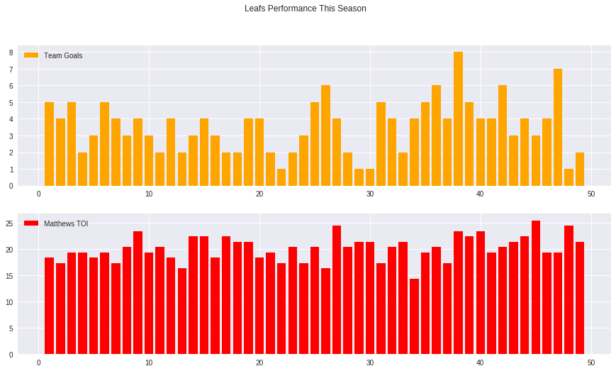

In Sheldon Keefe’s coaching first 20 games he had a league-best 15-4-1 record that equated to a 127-point pace for the season.
In this blog I use bayesian statistics and pymc3 to get answers about the Leafs performance under the two coaches. https://www.thesportsgeek.com/wp-content/uploads/2019/11/Maple-leafs-coach-825x400.jpg
https://nbviewer.jupyter.org/github/CamDavidsonPilon/Probabilistic-Programming-and-Bayesian-Methods-for-Hackers/blob/master/Chapter1_Introduction/Ch1_Introduction_PyMC3.ipynb
import pandas as pd
from sklearn.preprocessing import LabelEncoder
import matplotlib.pyplot as plt
import numpy as np
import datetime as dt
import arviz as az
from IPython.core.pylabtools import figsize
import scipy.stats as stats
%matplotlib inline
Here I read in a csv I created from webscrapping Auston Matthews 'Time on Ice' and the Toronto Maple Leafs total goals per game.
df = pd.read_csv('matthews.csv')
plt.style.use('seaborn')
fig, ax = plt.subplots(nrows=2, ncols=1, sharex=False, sharey=False,figsize=(15,8))
fig.suptitle('Leafs Performance This Season')
ax[0].bar(df['game'],df['team_goals'], color='orange', label = 'Team Goals')
ax[1].bar(df['game'],df['matthews_toi'], color='red', label = 'Matthews TOI')
ax[0].legend(loc='upper left')
ax[1].legend()
plt.show()

We Know that this season Babcock was replaced by Keefe, but using Bayesian statistics we can determine if there was changes in the leafs performance and on what day/game the change starts.
Both 'Team Goals' and 'Matthews TOI' can be fit with a Poisson(λ) distribution. Assuming that during the season on day 'tau' the parameter λ changes to a higher value, resulting in two λ parameters. This means that there will be a λ for before day 'tau' and a λ for after day 'tau' resulting in a switchpoint day/game. However, if there is no real difference in the Leafs/Matthews performance then the two λ should be equal.
Auston Matthews Ice Time
import pymc3 as pm
with pm.Model() as model:
lambda_1 = pm.Normal('lambda_1', 19, 10)
lambda_2 = pm.Normal('lambda_2', 19, 10)
tau = pm.DiscreteUniform("tau", lower=5, upper=41)
idx = np.arange(len(df)) # Index
lambda_ = pm.math.switch(tau > idx, lambda_1, lambda_2)
observation = pm.Poisson("obs", lambda_, observed=df['matthews_toi'])
trace = pm.sample(10000, tune=1000, chains=2)
Multiprocess sampling (2 chains in 2 jobs)
CompoundStep
>NUTS: [lambda_2, lambda_1]
>Metropolis: [tau]
Sampling 2 chains, 0 divergences: 100%|██████████| 22000/22000 [00:11<00:00, 1890.00draws/s]
The number of effective samples is smaller than 10% for some parameters.
What we are looking for from PyMC3 is the difference in the two lamdas and what day/game (tau) the changes occured.
pm.summary(trace)
| mean | sd | hpd_3% | hpd_97% | mcse_mean | mcse_sd | ess_mean | ess_sd | ess_bulk | ess_tail | r_hat | |
|---|---|---|---|---|---|---|---|---|---|---|---|
| lambda_1 | 19.148 | 1.134 | 16.894 | 21.225 | 0.014 | 0.010 | 6666.0 | 6666.0 | 7745.0 | 5034.0 | 1.0 |
| lambda_2 | 20.535 | 1.191 | 18.476 | 22.925 | 0.018 | 0.013 | 4292.0 | 4171.0 | 4963.0 | 5521.0 | 1.0 |
| tau | 24.154 | 11.620 | 7.000 | 41.000 | 0.281 | 0.199 | 1711.0 | 1711.0 | 1751.0 | 3205.0 | 1.0 |
(trace['lambda_2'] - trace['lambda_1'] > 0).mean()
0.81125
The Toronto Maple Leafs played 23 games under Mike Babcock so there should be a change on the 24 game if Sheldon Keefe had a significant effect on the team's performance The posterior distributions of the two λs are distinc and mean for 'tau' is 24.15, meaning the model actually recocnized that a change ocurred on that game. In addition, by taking the differences between all the lamda_2 and lamda_1 values and getting the mean, the chance that the difference in performance is due to the change on that game can be calculated. This means there s a 81.1% chance the change in coaching is the reason for the increase in Auston Matthews ice time.
Toronto Maple Leafs Goals per Game
import pymc3 as pm
with pm.Model() as model:
lambda_1 = pm.TruncatedNormal('lambda_1', 3, 3)
lambda_2 = pm.TruncatedNormal('lambda_2', 3, 3)
tau = pm.DiscreteUniform("tau", lower=14, upper=30)
idx = np.arange(len(df)) # Index
lambda_ = pm.math.switch(tau > idx, lambda_1, lambda_2)
observation = pm.Poisson("obs", lambda_, observed=df['team_goals'])
trace = pm.sample(10000, tune=1000, chains=2)
Multiprocess sampling (2 chains in 2 jobs)
CompoundStep
>NUTS: [lambda_2, lambda_1]
>Metropolis: [tau]
Sampling 2 chains, 0 divergences: 100%|██████████| 22000/22000 [00:11<00:00, 1853.81draws/s]
The number of effective samples is smaller than 10% for some parameters.
pm.summary(trace)
| mean | sd | hpd_3% | hpd_97% | mcse_mean | mcse_sd | ess_mean | ess_sd | ess_bulk | ess_tail | r_hat | |
|---|---|---|---|---|---|---|---|---|---|---|---|
| lambda_1 | 3.326 | 0.415 | 2.568 | 4.116 | 0.005 | 0.004 | 6848.0 | 6335.0 | 7527.0 | 6197.0 | 1.0 |
| lambda_2 | 3.963 | 0.456 | 3.156 | 4.838 | 0.006 | 0.004 | 5320.0 | 5320.0 | 5373.0 | 9373.0 | 1.0 |
| tau | 23.921 | 4.981 | 15.000 | 30.000 | 0.119 | 0.085 | 1749.0 | 1704.0 | 1631.0 | 3441.0 | 1.0 |
(trace['lambda_2'] - trace['lambda_1'] > 0).mean()
0.83355
Using the same proccess as before it can be seen that the 'tau' was found to is basically 24. In addition, there is a 83.1% chance the change in coaching is the reason for the Maple Leafs scoring more goals.
In conclusion, Keefe has made a significant impact in the leafs performance (enough for the model to find it) and I hope he keeps on this path!